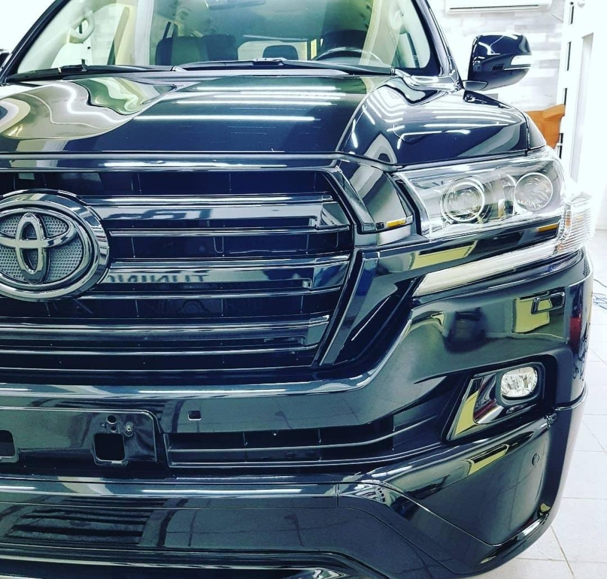

★★★★★
Тонировала там машину, делала полный антихром, очень хорошая студия, всегда подскажут что и как лучше сделать. Хороший мастер, вежливое обслуживание, есть зона ожидания Сделали все быстро и очень качественно 👍🏼

Тонируем стёкла, бронируем оптику, наносим керамику и антигравийную плёнку. Полировку с керамикой делаем за день, шумоизоляцию — примерно за сутки.
Студия находится в Уссурийске на улице Воровского, 2в/3, въезд с обратной стороны — крайний бокс слева. Здесь тонируют стёкла, бронируют оптику, наносят керамику и антигравийную плёнку, шумоизолируют салон, тюнингуют диски. Клиенты отмечают, что машину берут в работу сразу, сроки называют реальные, а материалы — не «фуфлыжные».
Цена зависит от класса и состояния машины — точную назовём после осмотра или по фото.
Тонируем стёкла и фары. В отзывах пишут, что забирают машину быстро и без косяков.
Клеим защитную плёнку на фары, чтобы они не бились от камней. Клиенты подтверждают: работу делают оперативно и без косяков.
Покрываем кузов антигравийкой. По отзыву, машина заметно преображается.
Наносим защитный состав на кузов, чтобы лак дольше держал вид. По отзыву, полировку с керамикой делают за день.
Полируем кузов и оптику. Клиенты пишут, что недочётов потом не находят.
Снижаем шум и вибрацию в салоне. По отзыву, машину вернули через день.
⏱ около сутокМеняем вид дисков под ваш вкус. Клиенты заказывали тюнинг дисков вместе со спойлером на Ауди.
Убираем хром с наружных элементов. Клиенты заказывали полный антихром вместе с тонировкой.
← листайте →
Машины принимают в работу без ожидания — об этом пишут в отзывах.
Нереалистичные сроки не озвучивают и в оговорённые вкладываются, отмечают клиенты.
Ценник на услуги называют вменяемым и не завышенным — это повторяется в нескольких отзывах.
Машину можно дождаться на месте — клиенты отмечают комфортную зону ожидания.
Тонировала там машину, делала полный антихром, очень хорошая студия, всегда подскажут что и как лучше сделать. Хороший мастер, вежливое обслуживание, есть зона ожидания Сделали все быстро и очень качественно 👍🏼
Ребята рукастые, выбор пленок огромный. Кроме тонировки стекол, заказал бронирование оптики. Работа сделана оперативно, косяков не нашел. Ценник на услуги не завышают 👌
Креативные ребята, предложили поставить спойлер на Ауди, затонировать фары, оттюнинговать диски. Машинка получилась – лялечка 😍
Нормальный сервис с адекватным, вежливым персоналом. Заполировали оптику, затонировали стекла. Без косяков, в сроки вложились.
Машины берут в работу сразу, нереалистичные сроки выполнения работы не озвучивают. Цены вменяемые, материалы не фуфлыжные.
Наклеили бронепленку на оптику, нанесли защитный состав (керамику) на кузов. Цены адекватные, работа сделана аккуратно.
Позвоните или напишите в WhatsApp либо Telegram.
Мастер посмотрит машину и подскажет, что и как лучше сделать.
Авто берут в работу сразу, без обмана по срокам.
Машину отдают без косяков и в оговорённый срок.
Сфотографируйте машину или проблемное место и отправьте нам. Ответим со стоимостью и сроком.
Приезжайте с понедельника по субботу с 08:00 до 20:00, воскресенье — выходной.
С понедельника по субботу с 08:00 до 20:00. Воскресенье — выходной.
Уссурийск, улица Воровского, 2в/3. Въезд с обратной стороны, крайний бокс слева.
Картой, наличными или переводом с карты.
Да, в студии есть зона ожидания.
По отзыву клиента, машину вернули через день.
По телефону, в WhatsApp или Telegram.